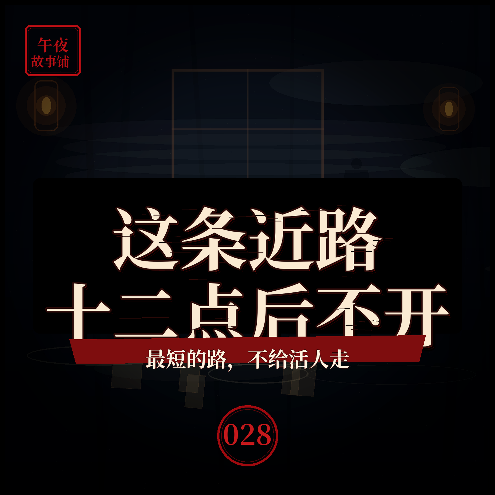

网约车司机说，这条近路他从不在十二点后开
导航上的最短路，未必是给活人走的

简介
那天我加班到凌晨，叫了辆网约车。导航推荐了一条穿过老城区的近路，能省二十分钟。可司机师傅死活不肯走，绕了远路。他说，这条近路，他从不在十二点后开。我以为他想多绕路多收钱，没在意。直到下车时，他给我看了他的接单记录——凌晨那一单，乘客一栏，永远显示着，两个人。本故事为原创虚构民间异闻演绎，请勿代入现实。
标签
- 民间故事
- 异闻
- 悬疑
- 怪谈
- 睡前故事
- 网约车
导航上的最短路，未必是给活人走的

那天我加班到凌晨，叫了辆网约车。导航推荐了一条穿过老城区的近路，能省二十分钟。可司机师傅死活不肯走，绕了远路。他说，这条近路，他从不在十二点后开。我以为他想多绕路多收钱，没在意。直到下车时，他给我看了他的接单记录——凌晨那一单，乘客一栏，永远显示着，两个人。本故事为原创虚构民间异闻演绎，请勿代入现实。